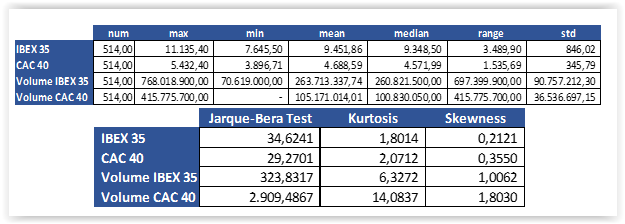
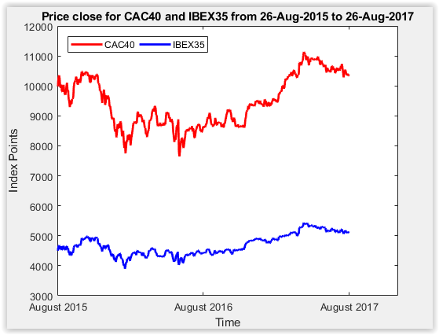
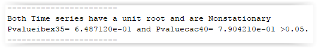
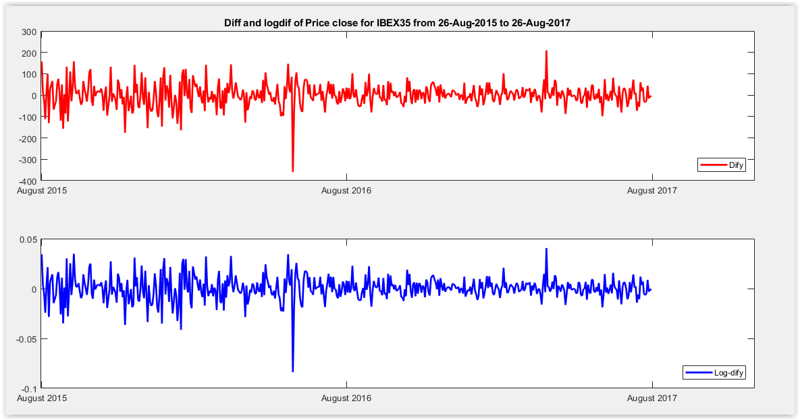
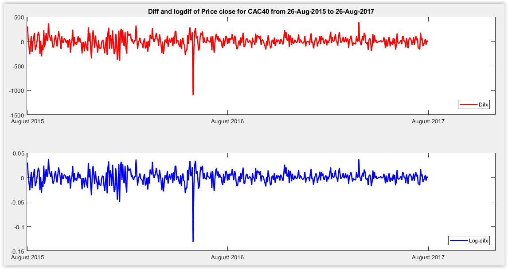
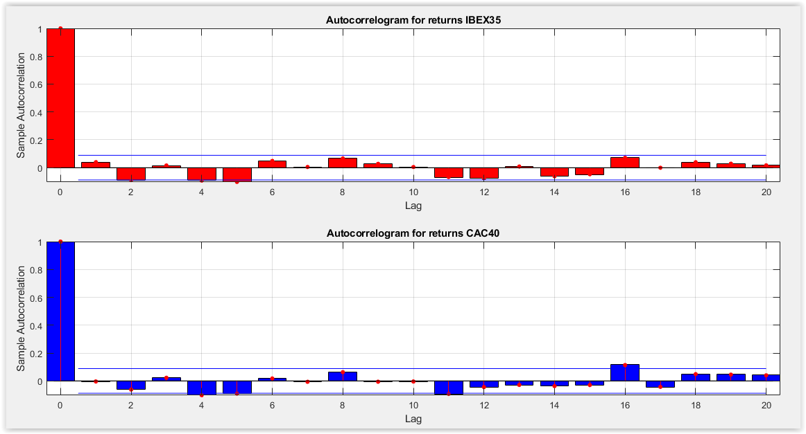

In this part, I will analyze and present the graphs and tables generated from the preview code.
First, the descriptive statistics are showed in the following tables:

According to some statistic measures, the number of observations are 514, the mean and the standard deviation are lower for the ibex 35 regarding to the CAC40. It is evidenced in figure 18, in which the CAC40 fluctuates with superior units and the range of its movement is higher than IBEX35.
The Jarque Bera(JB) statistical test of normality shows that all variables don’t follow a normal distribution because the statistical test is superior to 6 (JB>=6), then I reject the null hypothesis.
H0: JB<6 Time series follow a normal distribution.
H1: JB>=6 Time series don’t follow a normal distribution
Additionally, I see that the volume of the index time series is leptokurtic because the Kurtosis is higher than three, meaning that series are more peaked than normal distribution. On the other hand, the index price is platykurtic because the Kurtosis is lower than three, therefore the series are less peaked than normal distribution.
Moreover, the skewness shows that all-time series distributions are skewed to the right because the values are higher than 0.

According to the basic graph of the close price for both indexes over a period of 2 years between 2015 and 2016, you can see that the time series are nonstationary because they show a bullish trend. However, if you want to confirm it, you should apply the Dickey-Fuller or Philips Perrot test unit root of Nonstationary.
H0:g1=0-Time series has a unit root and is Nonstationary.
H1: g1<0-Time series does not have a unit root and is stationary.
After estimating the Dickey-Fuller and Philips Perrot test, I can conclude that the time series is nonstationary because the hypothesis null cannot be rejected. In other words, the p-values are higher than 5%.

As consequence, I transform both indexes in their differences and the first differences with logarithms or returns. As you can see in the following graphs, the series are stationaries:


The correlograms of autocorrelation function and their figures show that return series don’t have persistence. It means that they have short memory process because the fluctuation of the ACF decreases quickly, the bars’ size is small and most of autocorrelations aren’t representative.

Additionally, it is interesting to study the close price for the IBEX35 and the CAC40 with ordinary linear square and polynomial functions. For instance, the OLS estimation do not apply because evidently there is not a lineal relation.
In case of polynomial function with degree 5 and 10 the approximation is more suitable, in the following figures 22 and 23 you can see that the pink line is a polynomial of degree 10 which is a good estimation.
The polynomial of degree n is a function with this form and Coefficients a(n-t):
The non-parametric estimation is another way to approximate the real value, first it is necessary to compute h using the Silverman’s rule, estimate the Gaussian Kernel as anonymous function and after compute the small and big bandwidth with Nadayara Watson.
In the figures 22 and 23 the yellow line and the green line represent the non-parametric estimation to estimate the small and big bandwidth with c1=0.15 and c2=0.7, therefore you can conclude that it is also an appropriate estimation.
In order to apply a better approach, I estimate the best arma model for return of IBEX 35 and CAC 40, which is the lowest Akaike criterium, afterward I compute the price with the following equation:
The following figures show the best arma model and the close price estimation:
I can conclude that the arma model p=4 and q=2 is a good forecast, however it is required to estimate if the sample residual present arch effect. In this case, the p-value is higher than 5%, for this reason I do not reject the null hypothesis about the constant variance.
Now, I introduce an exogeneous variable to propose another kind of model. This type of model is called ARIMAX which has the same structure of the ARMA model, but you can introduce an independent variable. In the bellow charts, you can see in the ARIMAX’s estimation in the blue line and the turnover as exogeneous variable.
Moreover, it is important to analyze the index’s volumes to predict or forecast the dependent variable. In the following chart I show the CAC 40 and IBEX 35 daily volumes.
After estimating the Dickey-Fuller test, I can conclude that the volume’s time series are stationary because I cannot reject the null hypothesis. In other words, the critical value is lower than the t-statistic.
For the arch effect, the p-value is lower than 5%. For this reason, I rejecte the null hypothesis about the constant variance because the series presents a Heteroskedasticity’s problem. Then, it is recommend to use a family Garch model.
The best garch model is estimated using a boucle with the arima and estimate matlab’s functions, next I choose the model with the lowest Akaike criterium. The bellow graphs exhibit the conditional volatility for IBEX 35 and CAC 40 and the generation of 10 paths or samples.
Finally, I can conclude that the both indexes do not show a lineal relation and the polynomial function is a better approximation than OLS, as well as, the non-parametric regression is an appropriate estimation.
However, the Arma model presents a better approach because it studies the preview data and the indexes’ time series do not present an arch effect. For this reason, it is not necessary to use a Garch family model.
In addition, I apply an Armax model to introduce another variable since it produces a forecast with an independent variable and the historical data. Nevertheless, in some periods the forecast presents a small deviation from the real value. Moreover, it is necessary to analyze the exogenous variable within its own model.
In other words, the independent variables present heteroskedasticity, as a result I use a Garch model to predict the conditional variance.
The Jarque Bera’s test reflects that indexes and their volumes do not follow a normal distribution and they are more or lower peaked than normal distribution. As consequence, it is important to mmention that the gaussian law is a strong hypothesis because normally the financial time series do not follow this kind of movements.
Another important conclusion is that CAC40 fluctuates with superior units and the range of its movement is higher than IBEX35, for this reason the CAC40 presents a higher volatility than the Spain’s index.
-Analysis of Financial Time Series, 2nd Edition, Ruey S. Tsay, University of Chicago, Graduate School of Business.
-Handbook of volatility models and their aplications. Bauwens Luc, Hafner Christian and Laurent Sebastien. Wiley & Sons Inc. Publication.
-A Review of Kernel Density Estimation with Applications to Econometrics. Adriano Z. Zambom and Ronaldo Dias.
-Econometrics Toolbox user's Guide. The MathWorks, Inc.